En partant de Saint Martin et en suivant la RD 117 et la voie ferrée, passant le col du Campérié, en bas de ce col coule une petite rivière à truite : La Boulzane.
L'objectif de cette page est de remonter cette rivière vers sa source, en traversant les quelques villages qui la bordent, en commançant par Lapradelle, Puilaurens
Les moines de Saint-Martin de Lez passaient par Lapradelle pour rejoindre leurs possessions des alentours de Caudiès- Fenouillèdes (en suivant la Boulzane dans l'autre sens que proposé dans cette page...)
Certaines interprétations de la possession "St-Pierre de Petra-lata" de l'abbaye de Saint-Martin de Lez positionnaient cette église à Lapradelle. Des recherches modernes montrent que toute la haute vallée de la Boulzane dépendait de l'Abbaye de Saint Martin du Canigou et donc pas de notre abbaye. Le dit "St-Pierre de Petra-lata" serait plutôt situé à Saint Paul de Fenouillet.
A Salvezine le Panneau signalitique apposé par le syndicat d'initiative mentionne "Sainte Marie in coronulas du Caunil" (d'après Louis Fédié interprétant la Bulle du pape Agapet de 954) comme dépendant de l'Abbaye de Saint Martin Lys.
Reste que la Haute vallée de la Boulzane, fait comme Saint Martin Lys partie du Fenouillède Audois.
D'autres points communs entre les communes de cette vallée et Saint Martin :
Les Cartes Postales Anciennes des villages de la Boulzane sont visibles sur une page dédiée


Lavoir de Lavagnac (le hameau de Lavagnac est acollé à Lapradelle, rive gauche de la Boulzane)

Barrière rocheuse avant Salvezine franchie par la Boulzane - le coude que fait la Boulzane à ce passage est plutôt "champêtre"


Dans ce coude de nombreuses truites ont été lachées, malheureusement la sécheresse de cette année 2022 semble avoir trop appauvri en oxygène la rivière, et le nombre de poissons morts (présents là) est assez impressionnant... Il reste de belles truites vivantes même si mes photos ne sont pas suffisamment bonnes pour figurer ici...
 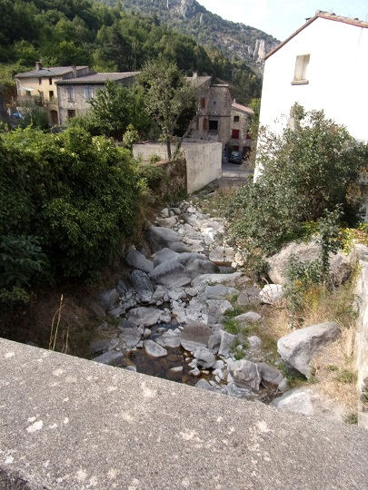
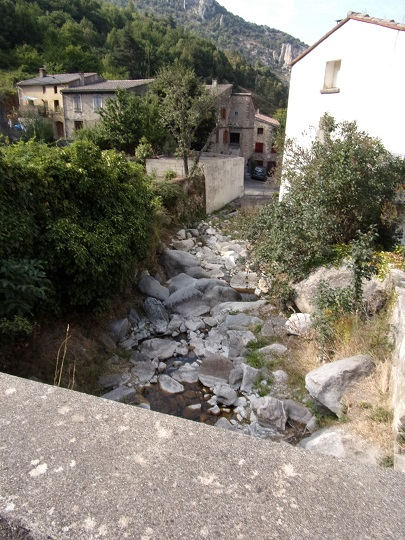
Chateau de Gincla devenu l'Hostellerie des grands ducs
Cénotaphe
Les anciennes forges de Gincla, panneaux explicatif et emplacement

L'église de Gincla
Une des maisons d'hotes de Gincla
Mairie de Gincla

Cascade à la sortie du village visible depuis la route
 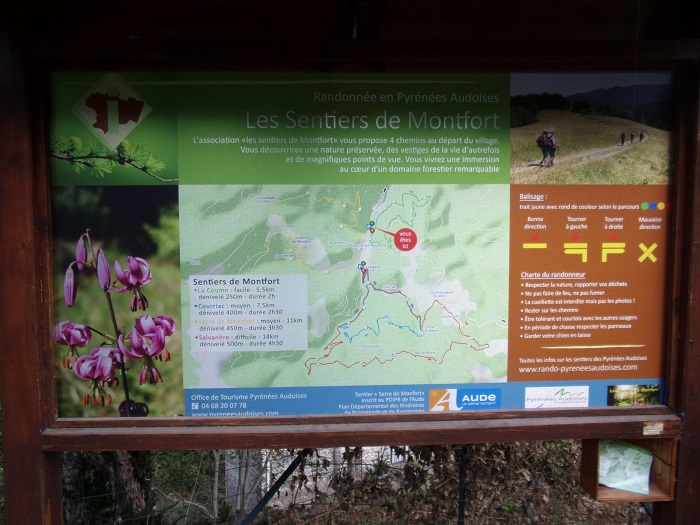
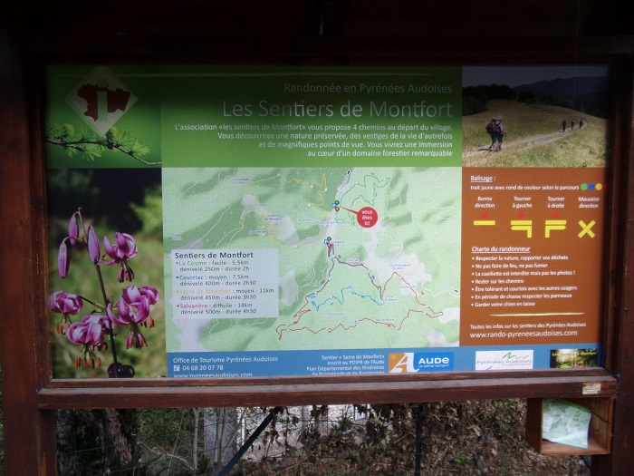
Entrée de Monfort
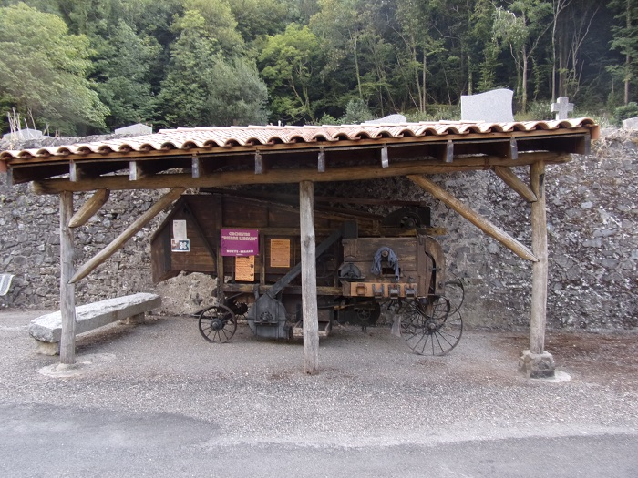 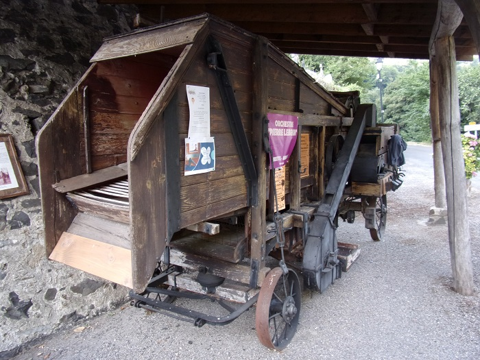 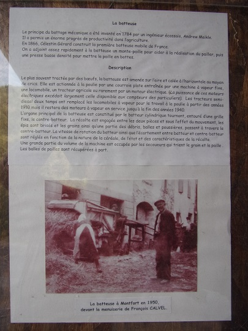La bateuse et son pavillon à l'entrée de Montfort
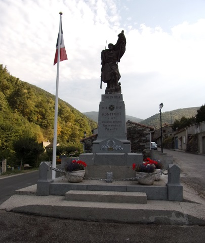 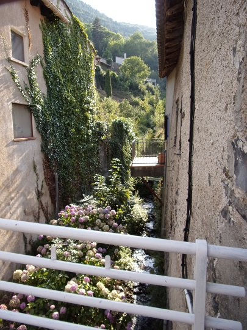 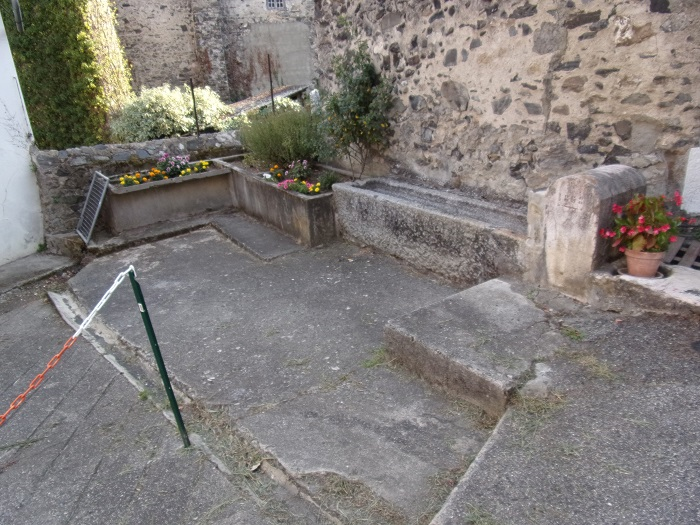 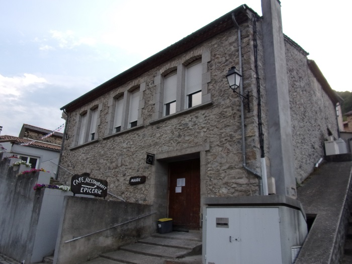Autour du village
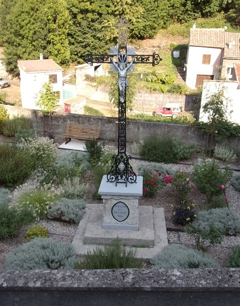 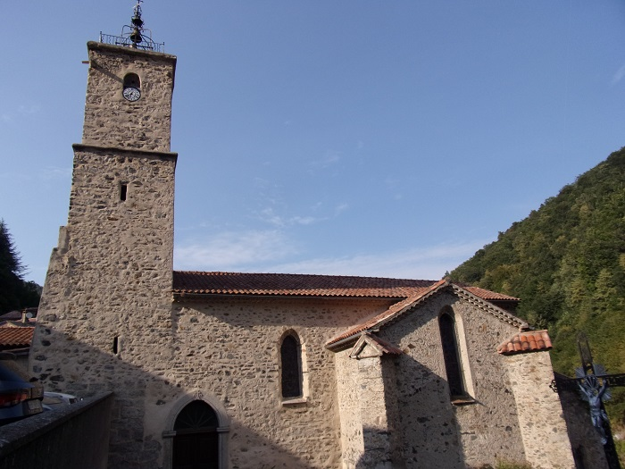 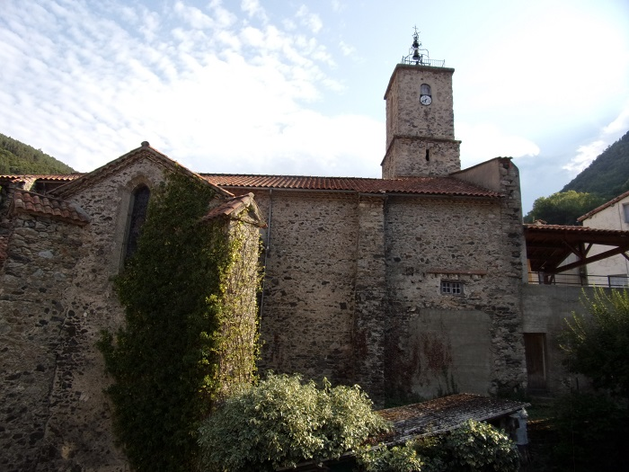 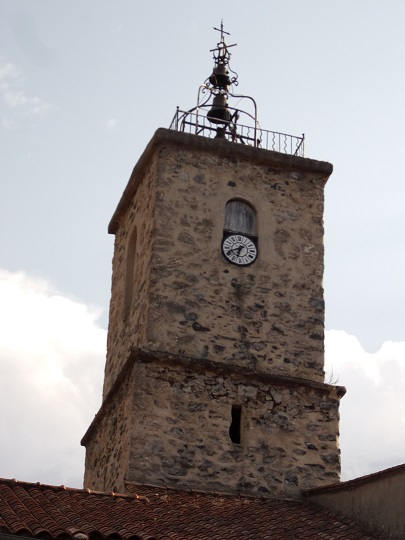 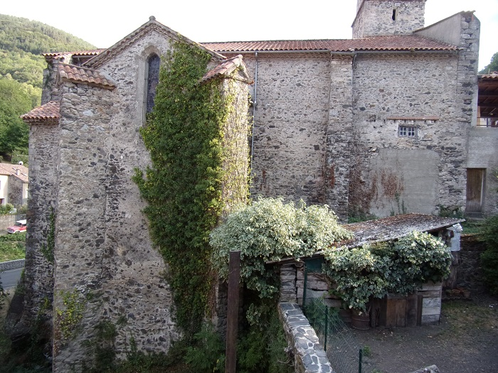 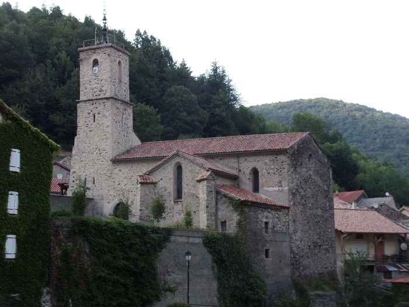Autour de l'église